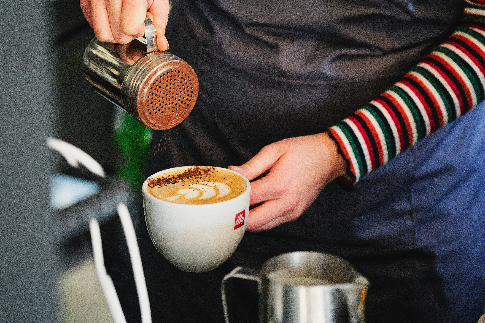
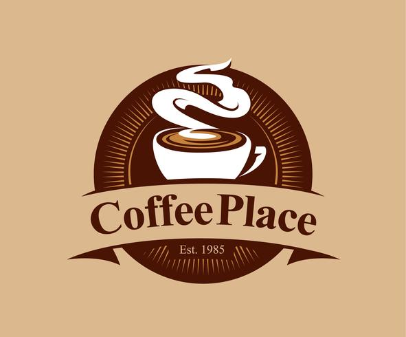
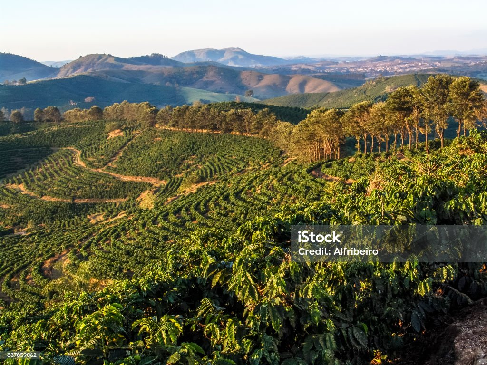

Seleccionamos granos de cafe arabicos de pequeños caficultores de Villa Rica, Quillabamba y Chanchamayo. Tostado semanalmente en pequeños lotes para garantizaar una experiencia aromatica inigualable.
Ver Catálogo de Granos Disponibles →

Seleccionamos granos de cafe arabicos de pequeños caficultores de Villa Rica, Quillabamba y Chanchamayo. Tostado semanalmente en pequeños lotes para garantizaar una experiencia aromatica inigualable.
Ver Catálogo de Granos Disponibles →
En Coffee Place creemos en el comercio justo y en la sostenibilidad agrícola. Trabajamos directamente con familias productoras a mas de 1,600 metros sobre el nivel del mar, eliminando intermediarios y pagando precios éticos por cosechas de estricta altura

Las plantas crecen protegidas por árboles nativos, preservando la biodiversidad y la fauna local.
Unica se recolectan las cerezas de café en su punto optimo de maduración roja.
Perfilamos cada origen para resaltar sus notas frutales y achocolatadas sin quemar los aceites naturales
Presentamos una microcosecha exclusiva proveniente de Santa Teresa (La Convencion). Destaca por un perfil floral y limpio, acidez brillante y notas a jazmin y durazno blanco
Conoce más detalles tecnicos del loteTodos los sabados a las 11:00 am abrimos nuetra mesa de cata al público. Aprende a diferenciar perfiles de acidez, cuerpo y dulzor guiado por baristas certificados.
Visita nuestra cafetería de especialidad en Lima: